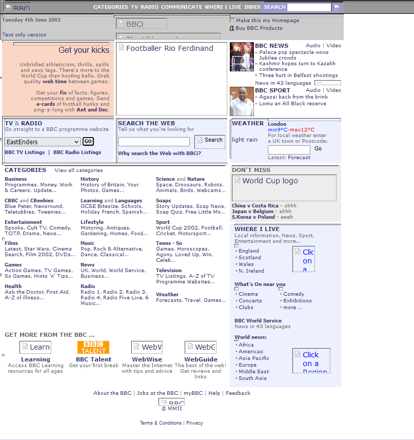

|  |
Obviamente, com a chegada de um website de uma empresa de notícias prestigiosa no mercado, não foi surpresa nenhuma seu aumento imediato em popularidade, mesmo que súbito.
Não foi surpresa também o marco de como a internet era útil ter sido provado. Simplesmente a capacidade de você conseguir ver todas as notícias do dia, com apenas um clique, com apenas uma visita a um website, era algo mais do que surpreendente, era revolucionário na época. Sem dúvidas, a introdução do site da BBC em 2001 foi um dos fatores que ajudou á expansão de informação na internet. |
Próxima Página